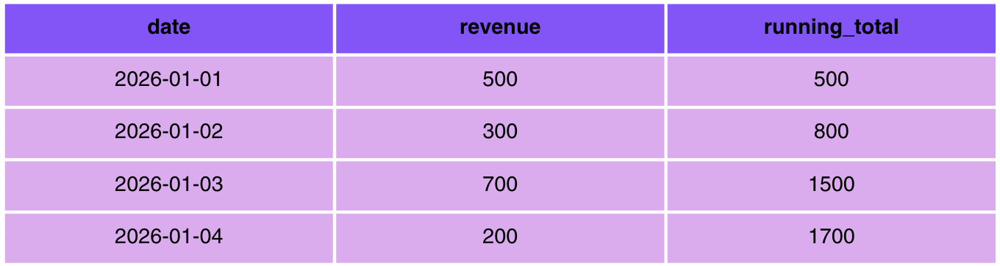
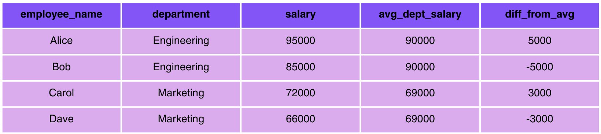
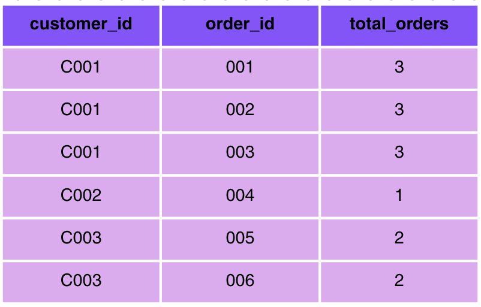
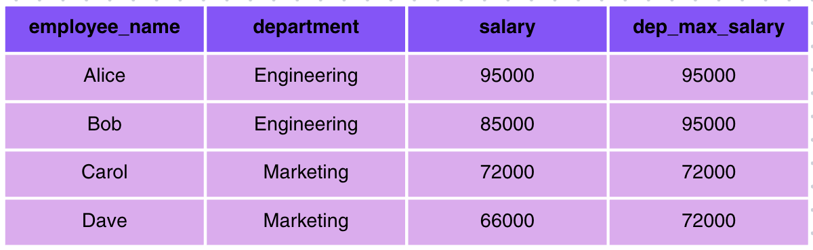

Window Functions: Aggregation Functions
Group By vs Window Functions
Group By collapses rows. You get one row per group, and individual row data is gone.
Window functions compute across a set of rows without collapsing them. Every row is returned. The aggregate result is attached to each row.
This means you can return an employee's salary and their department average in the same row, without a subquery or a join.
Anatomy of a Window Function
function_name() over (
partition by column
order by column
rows between ... and ...
)Partition by divides rows into groups. The function runs independently within each group. Omit it and the function runs across the entire result set.
Order by controls the order of rows within each partition. Required for ranking and running total functions. Optional for pure aggregations.
Rows between defines the frame, which rows within the partition are included in the calculation relative to the current row. For example, rows between 2 preceding and current row limits the window to the current row and the two rows before it. If omitted, the default frame runs from the start of the partition to the current row (when order by is present) or includes the entire partition (when order by is absent).
The 3 Categories of Window Functions
- Aggregation - run standard aggregate functions (sum, avg, count) across a window without collapsing rows.
- Ranking - assign a rank or row number to each row within a partition. row_number(), rank(), dense_rank().
- Value - access data from other rows relative to the current row. lag(), lead(), first_value(), last_value().
Aggregation Functions
These are the standard aggregates you already know, used inside an over() clause.
sum
Running total of revenue by date:
select
order_date,
revenue,
sum(revenue) over (order by order_date) as running_total
from orders
Each row shows cumulative revenue up to that date.
avg
Department average alongside each employee's individual salary:
select
employee_name,
department,
salary,
avg(salary) over (partition by department) as avg_dept_salary,
salary - avg(salary) over (partition by department) as diff_from_avg
from employees
count
Total orders per customer, without losing the order-level rows:
select
customer_id,
order_id,
count(*) over (partition by customer_id) as total_orders
from orders
Min / Max
Highest salary in each department, attached to every row:
select
employee_name,
department,
salary,
max(salary) over (partition by department) as dept_max_salary
from employees
When to Use Window Aggregations
If you find yourself writing a subquery or CTE just to join an aggregate back to individual rows, a window function likely does it in one step.
-- without window functions
select e.employee_name, e.salary, d.avg_salary
from employees e
join (
select department, avg(salary) as avg_salary
from employees
group by department
) d on e.department = d.department
-- with window functions
select
employee_name,
salary,
avg(salary) over (partition by department) as avg_salary
from employeesSame result. Less code. No join.